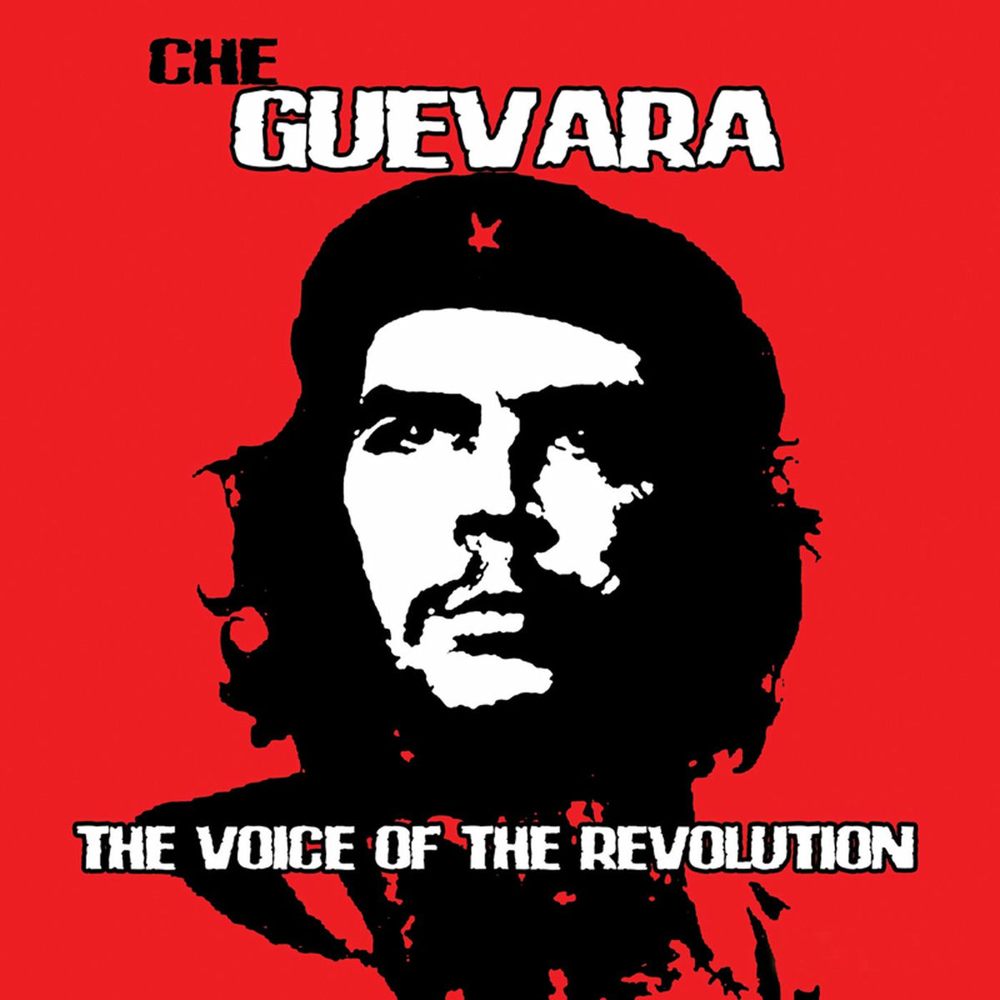

1928 – 1967

“The true revolutionary is guided by a great feeling of love. It is impossible to think of a genuine revolutionary lacking this quality.”
Ernesto “Che” Guevara was an Argentine revolutionary, physician, author, and guerrilla leader. He played a major role in the Cuban Revolution and became a global symbol of resistance, rebellion, and social justice.
Che was deeply committed to fighting inequality and imperialism. His ideology and fearless spirit inspired revolutionary movements across Latin America, Africa, and beyond.
Though executed at a young age, Che Guevara’s legacy continues to live on as a symbol of courage, sacrifice, and revolutionary thought.